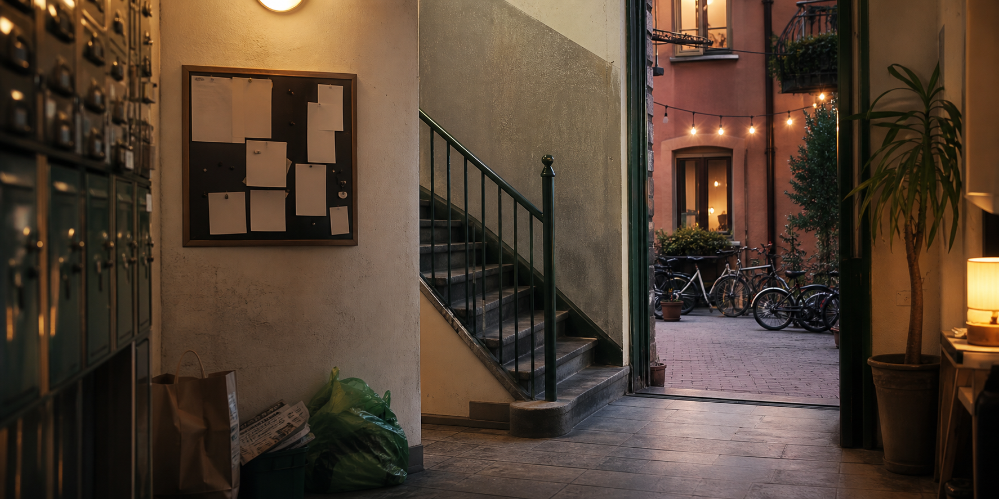

Kortformat som går att producera skarpt och pitcha vidare.

Kort svensk komediserie
BRF Nygatan
En nyinflyttad granne ställer en rimlig fråga på årsmötet och blir indragen i ett hus där varje lapp, nyckel och cykelrum kan starta en konstitutionell kris.
Premiss
Smamakt, grannsanningar och social panik i trapphusformat.
Serien bygger på en enkel komedimotor: en liten praktisk fråga i föreningen blir alltid personlig. Alla försöker framstå som rationella, men alla har något att vinna, dölja eller kontrollera.
Tonen är torr, igenkännbar och varm nog för att publiken ska kunna tycka om figurerna även när de beter sig orimligt.
Vardagsrealism med mockumentary-nara reaktioner och snabba avbrott.
Trapphus, tvättstuga, innergård, styrelserum och lägenheter.
Karaktarspaket
Roller som skapar konflikt utan att serien behöver jaga skämt.
Den nyinflyttade
Publikens ingång. Vill bara bo normalt, men kan inte låta bli att fråga varför allt är så konstigt.
Ordforanden
Konflikträdd formellt ansvarig som använder protokoll för att slippa fatta beslut.
Kassoren
Ser ekonomiska risker i allt, inklusive fika, blomjord och spontana trevligheter.
Regelvaktaren
Kan stadgarna, minns allt och skriver lappar som om de vore myndighetsbeslut.
Losningspersonen
Har alltid en kontakt, en app eller en släkting som kan fixa saken billigare.
Veteranen
Har bott i huset längst och vet var alla gamla konflikter ligger begravda.
Pilotavsnitt
Årsmötet
Den nyinflyttade frågar varför cykelrummet är fullt av omärkta cyklar. Frågan öppnar en kedja av anklagelser, gamla löften och misstankar om andrahandsuthyrning. När ingen annan vill ta ansvar blir den nyinflyttade invald i styrelsen.
01
Kall start: anonym lapp om cyklar i porten.
02
Årsmötet fastnar i definitionen av en övergiven cykel.
03
En granne avslöjar att någon använder förrådet som kontor.
04
Den rimliga personen blir vald till ansvarig.
Säsong 1
Avsnittsideer
En försvunnen torktumlarnyckel gör att huset delar sig i två läger.
En innergårdsmiddag blir en folkomröstning om lukt, rök och klass.
Miljöprofilering krockar med parkeringsplatser och gammal avund.
Alla vill renovera, ingen vill öppna sina väggar.
En turist i fel port får hela styrelsen att agera spaningsgrupp.
Budget, gluten och vem som egentligen får sjunga solo.
Från idé till inspelning
Praktisk plan
- 1
Skriv pilotmanus på 8-12 minuter och en ensidig seriepitch.
- 2
Storyboarda piloten med fokus på reaktioner, entréer och visuella avslöjanden.
- 3
Lås inspelningsplatser: trapphus, tvättstuga, innergård och ett styrelserum.
- 4
Gör en enkel budget, inspelningsschema och rättighetslista för musik, location och medverkande.
- 5
Spela in en proof-of-concept eller full pilot för pitch, stödansökan och casting.